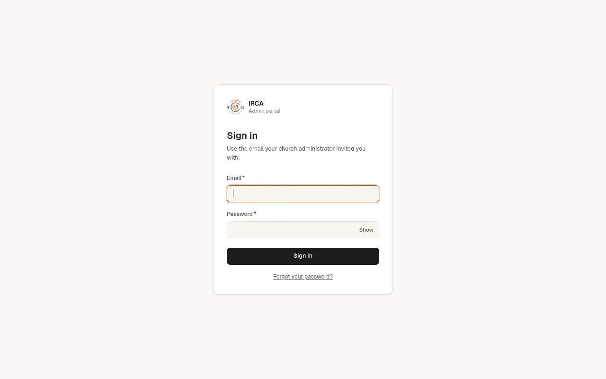
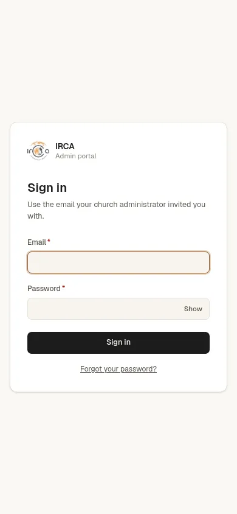

Client work for IRCA, a church · Organisation platform
IRCA Church System
Membership, departments and finance for a growing church, in three apps that share one API.
A church outgrows spreadsheets fast. This system gives IRCA a public registration form for new members, a staff portal where pastors, department leaders and the finance team each see exactly their part, and an outreach app the team uses on campus to record who they met. Every rule about who can see what lives in the API, not in the screens.
- 3apps, each deployed on its own
- 57design decisions written down
- 12months of seeded history for testing
- 1API that owns every permission
What it does
01Role-based by design
Pastors see membership and prayer requests, finance sees money, department leads see their department. Nobody sees more than their role allows.
02Public registration form
New members register themselves. The form is its own small app with its own restricted database login.
03Finance that adds up
Contributions and spending recorded by the finance team, with printable PDF statements.
04Outreach on the go
An installable phone form for the campus team: pick a college once, then add names and numbers quickly.
05A support console with view-as
Support can see the portal as any role, without being given that role's powers.
06Built to be handed over
Every decision written down, every runbook and deploy step documented.
On the screen


How it's built
- NestJS API on a Linode server under pm2. Portal and form on Vercel.
- PostgreSQL 18 on Neon, with a separate database role per app. Prisma migrations.
- The portal proxies /api through its own origin, so the session cookie never crosses sites.
- Argon2 password hashing, Helmet headers, rate limiting and structured logs with pino.
- Unit tests with Vitest, end-to-end tests with Playwright.
Need something like IRCA?
Tell me what you need. I'll tell you honestly how I'd build it, how long it would take and what it would cost.